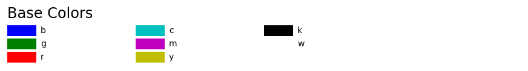
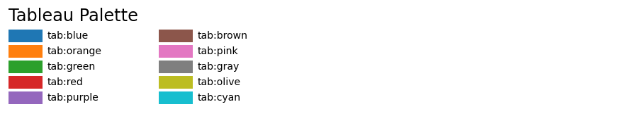
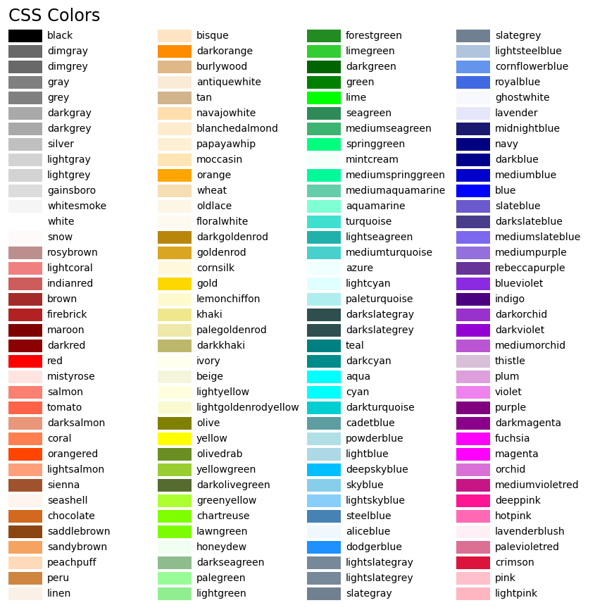

Note
Click here to download the full example code
List of named colors¶
This plots a list of the named colors supported in matplotlib. Note that xkcd colors are supported as well, but are not listed here for brevity.
For more information on colors in matplotlib see
- the Specifying Colors tutorial;
- the
matplotlib.colorsAPI; - the Color Demo.
from matplotlib.patches import Rectangle
import matplotlib.pyplot as plt
import matplotlib.colors as mcolors
def plot_colortable(colors, title, sort_colors=True, emptycols=0):
cell_width = 212
cell_height = 22
swatch_width = 48
margin = 12
topmargin = 40
# Sort colors by hue, saturation, value and name.
if sort_colors is True:
by_hsv = sorted((tuple(mcolors.rgb_to_hsv(mcolors.to_rgb(color))),
name)
for name, color in colors.items())
names = [name for hsv, name in by_hsv]
else:
names = list(colors)
n = len(names)
ncols = 4 - emptycols
nrows = n // ncols + int(n % ncols > 0)
width = cell_width * 4 + 2 * margin
height = cell_height * nrows + margin + topmargin
dpi = 72
fig, ax = plt.subplots(figsize=(width / dpi, height / dpi), dpi=dpi)
fig.subplots_adjust(margin/width, margin/height,
(width-margin)/width, (height-topmargin)/height)
ax.set_xlim(0, cell_width * 4)
ax.set_ylim(cell_height * (nrows-0.5), -cell_height/2.)
ax.yaxis.set_visible(False)
ax.xaxis.set_visible(False)
ax.set_axis_off()
ax.set_title(title, fontsize=24, loc="left", pad=10)
for i, name in enumerate(names):
row = i % nrows
col = i // nrows
y = row * cell_height
swatch_start_x = cell_width * col
text_pos_x = cell_width * col + swatch_width + 7
ax.text(text_pos_x, y, name, fontsize=14,
horizontalalignment='left',
verticalalignment='center')
ax.add_patch(
Rectangle(xy=(swatch_start_x, y-9), width=swatch_width,
height=18, facecolor=colors[name])
)
return fig
plot_colortable(mcolors.BASE_COLORS, "Base Colors",
sort_colors=False, emptycols=1)
plot_colortable(mcolors.TABLEAU_COLORS, "Tableau Palette",
sort_colors=False, emptycols=2)
plot_colortable(mcolors.CSS4_COLORS, "CSS Colors")
# Optionally plot the XKCD colors (Caution: will produce large figure)
#xkcd_fig = plot_colortable(mcolors.XKCD_COLORS, "XKCD Colors")
#xkcd_fig.savefig("XKCD_Colors.png")
plt.show()
- 
- 
- 
References¶
The use of the following functions, methods, classes and modules is shown in this example:
Total running time of the script: ( 0 minutes 1.219 seconds)
Keywords: matplotlib code example, codex, python plot, pyplot Gallery generated by Sphinx-Gallery